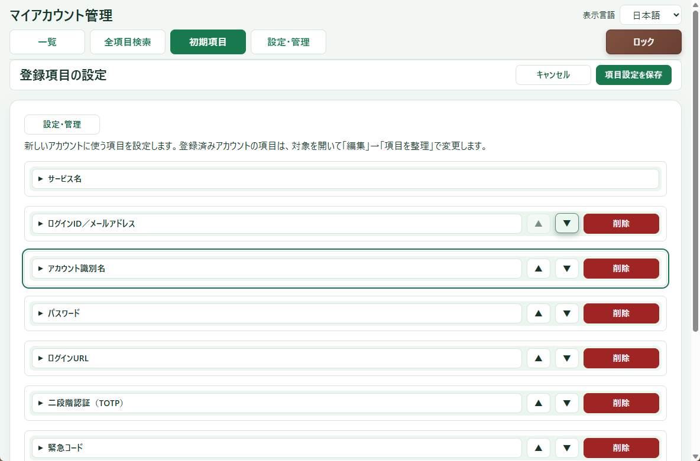
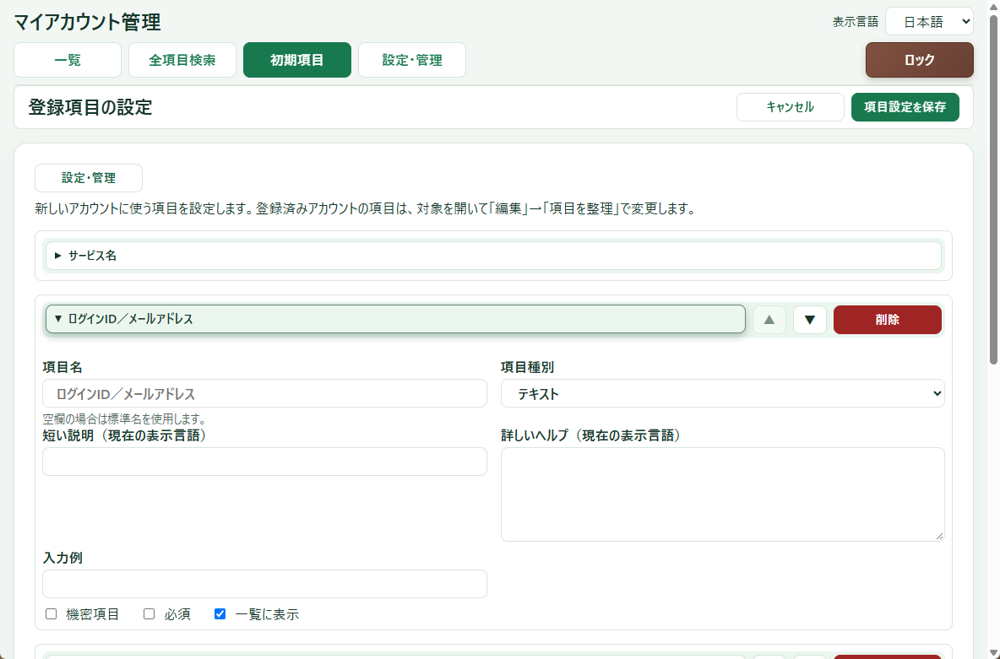
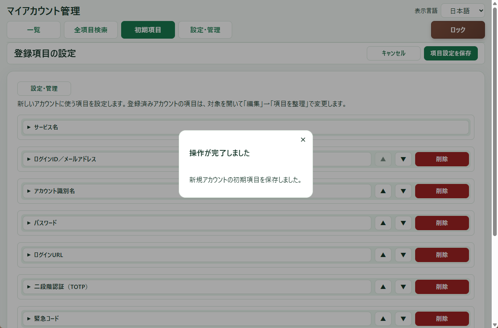
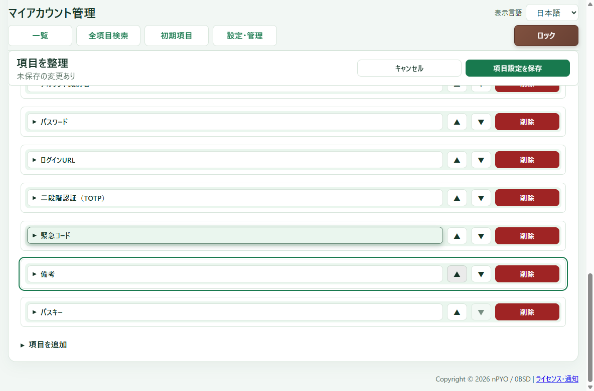
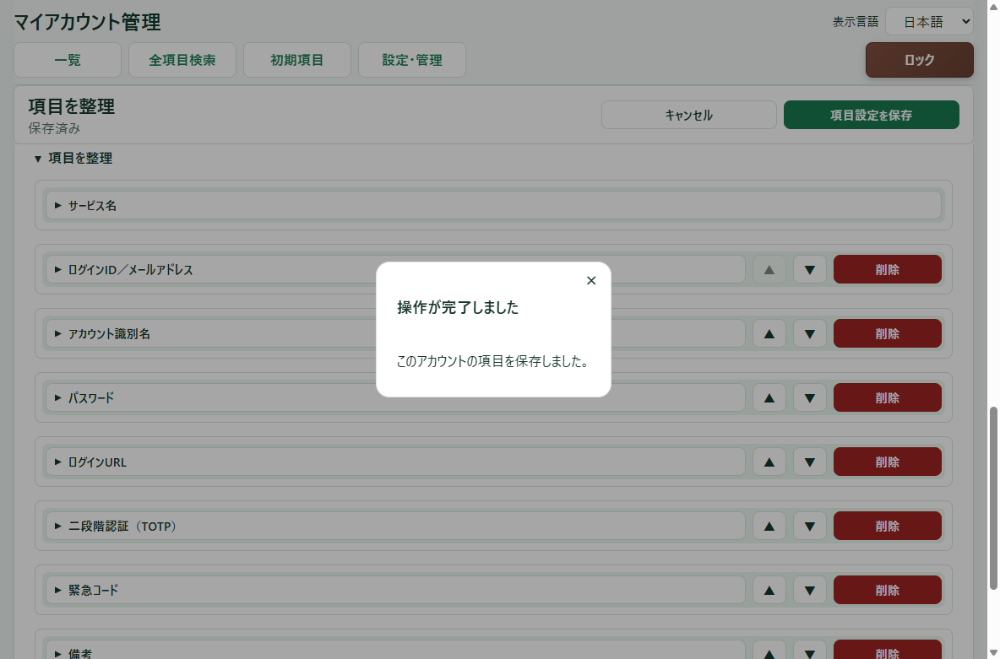
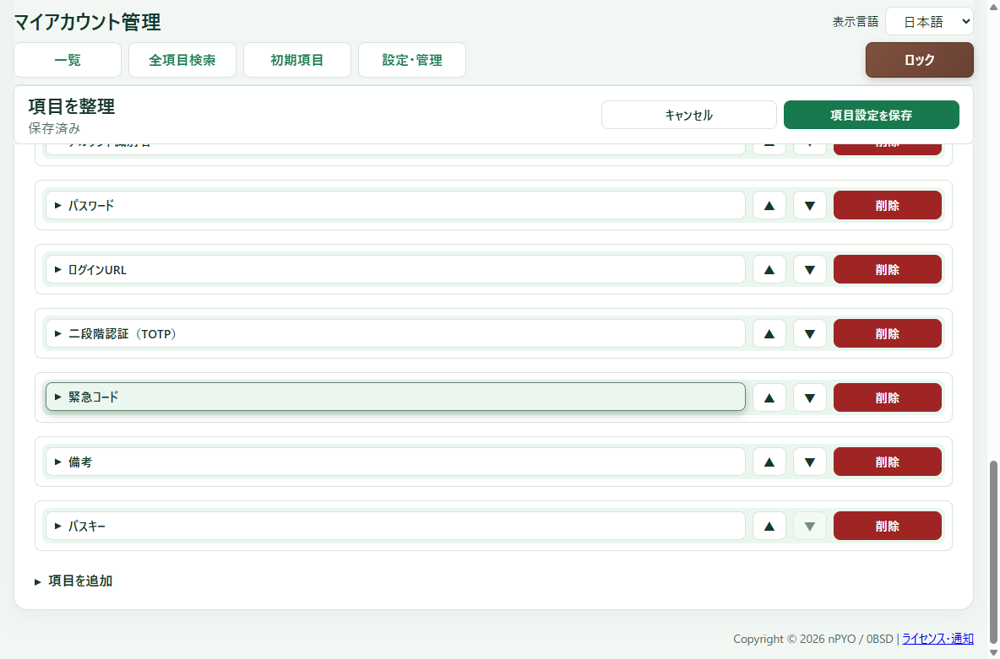
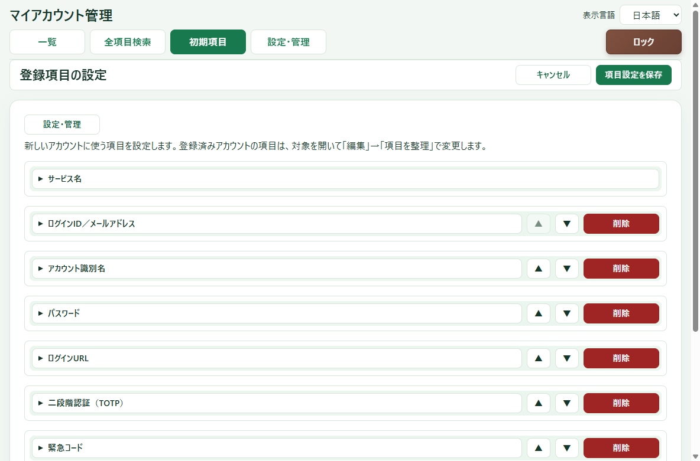
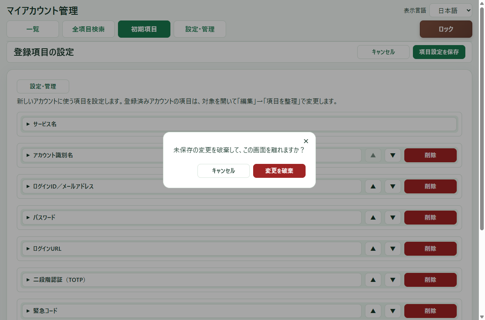
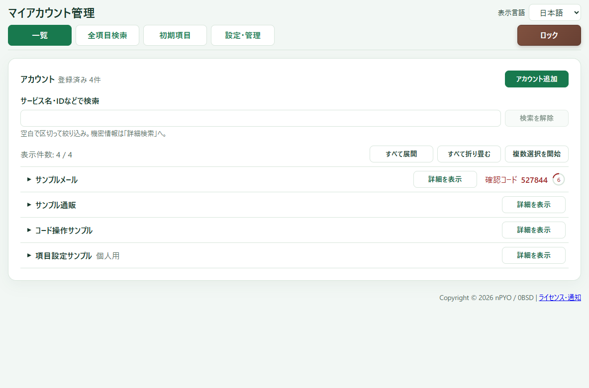
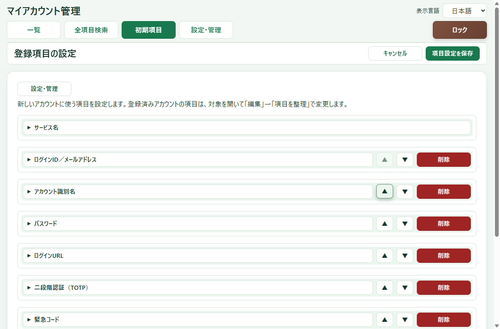

25項目の順番を変更
▲▼で項目を移動すると、動いた項目に枠が付きます。
手順一覧を開く（13手順）
初期項目の順番
1動かす項目と方向を確認
初期項目の［アカウント識別名］の▼を押します。
2移動した項目の枠を見る
アカウント識別名が1段下へ移動し、緑の枠で示されます。

3別の要素を押す
例ではログインIDの項目名を押し、設定を開きます。

4［項目設定を保存］を押す
変更した順序を保存します。

個別アカウントの順番
5個別アカウントでも順序を変える
［編集］→［項目を整理］で備考の▲を押します。
6上へ移動した枠を見る
備考がパスキーより上へ移動します。

7個別の項目設定を保存する
［項目設定を保存］を押します。

8保存後の並びを確認する
メッセージを閉じ、対象の並びを確認します。

画面遷移で枠を解除
9画面を離れる場合の例
初期項目で識別名の▲を押します。

10移動直後の枠を確認する
識別名が上へ移動し、外周に枠が付きます。
11一覧へ移動する
［一覧］を押します。未保存のため破棄確認が出ます。

12保存せず離れる例
この例では［変更を破棄］を選んで一覧へ戻ります。

13初期項目へ戻る
未保存だった順序は元に戻り、移動項目の外周枠も残りません。
